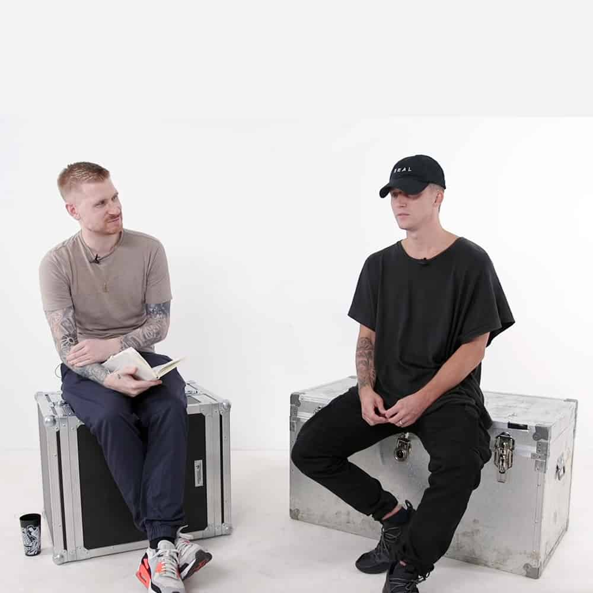

About NF
NF is a rapper from Canadian, who has become a lot more popular recently with his recent releases of songs such as "Leave me alone", "When I grow up", "The search". He is consider to be one of the best new generation rapper out there by many people.
NF being interviewed
NF's Characteristics
- He doesn't swear
- He rap alot about god
- Most of his songs are about sadness
NF's social
NF isn't that active on social medias, but he still post something up there